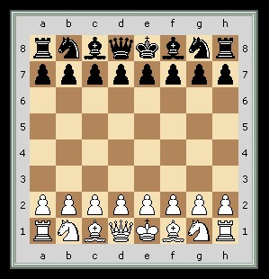

Leírása
A sakkjátékot két játékos játssza egymás ellen a négyzet alakú, nyolc sorra és nyolc oszlopra felosztott sakktáblán, 16–16, azaz összesen 32 bábuval. A két játékos bábui határozottan eltérő színűek. A színek elnevezése világos, illetve sötét. Köznapi értelemben véve a sötét játékos bábui fekete színűek, míg a világoséi általában fehérek vagy világosbarnák (utóbbi főleg akkor, ha a bábukat fából készítették). A játékosok felváltva lépnek, és mindkettejük célja, hogy a másik fél király figuráját a játékszabályok szerint bemattolják (azaz megtámadják, mégpedig úgy, hogy a támadást ne tudja elhárítani).
A sakk tábla
A tábla mindig akkor áll helyesen, ha a bal alsó sarokban sötét, a jobb alsóban pedig világos színű mező van. Vízszintesen az 1-től 8-ig, arab számokkal jelölt sorok, függőlegesen az a–h betűkkel azonosított vonalak vannak. Magán a sakktáblán többnyire nagybetűk láthatók, a játszmák lejegyzésénél kisbetűket írunk. A váltakozó színű négyzetek neve mező, és a vonalak, valamint sorok jelével hivatkozunk rájuk. A játékosok bal keze felé eső sarokmező sötét színű. A világossal játszó játékos esetén ez a mező az a1, sötétnél a h8. Alapállásban a világos király e1-en, a sötét király e8-on áll.
Az a–d vonalak neve vezérszárny, az e–h vonalaké királyszárny. A tábla közepe a centrum. Szűkebb értelemben ez csupán a d4, d5, e4 és e5 mezőket jelenti, tágabb értelemben centrumnak nevezzük a c3, c6, f6 és f3 mezők által kijelölt négyzetet. A sarkaikkal érintkező mezők képezik az átlókat. Az a1–h8, illetve az a8–h1 átlókat nagyátlóknak hívjuk.
Figurák és értékeik
A játék kezdetén a világosnak és a sötétnek ugyanannyi figurája van: 1–1 király, 1–1 vezér (alternatív neve: „királynő”), 2–2 bástya (alternatív neve: „torony”), 2–2 huszár (alternatív neve: „ló”), 2–2 futó és 8–8 gyalog (alternatív neve: „paraszt”). A figurák kiindulási helyzetét, illetve mozgatásuk lehetőségeit a játék szabálya határozza meg.
A 8–8 gyalogon és az 1–1 királyon kívül minden figura tiszt. A huszárt és a futót könnyűtisztnek, a vezért és a bástyát nehéztisztnek hívjuk. A kiindulási helyzetben elfoglalt helyük (királyszárny vagy vezérszárny) alapján szokás beszélni királybástyáról, vezérfutóról stb., ezek azonban nem hivatalos elnevezések. Azt a sort, amelyen alapállásban a tisztek és a király állnak (világos esetében az 1., sötét esetében a 8. sort) alapsornak hívjuk.
A figurák értékét egyrészt a lépéslehetőségeik, másrészt az adott állás határozzák meg. Egyszerűbb esetben szokás úgy becsülni, hogy egy gyalog 1 egységet ér, egy könnyűtiszt 3-at, egy bástya 5-öt, a vezér 9-et vagy 10-et. Eszerint általános érvénnyel lehet azt mondani, hogy a vezér erejét tekintve kb. két bástyával vagy három könnyűtiszttel egyenértékű. A konkrét helyzetben ezek az értékek azonban egészen szélsőségesen is változhatnak.
Sakkfigurák
Király
A király a játék legfontosabb bábja, hiszen az egész játék a bemattolására irányul. Bármely irányban (vízszintesen, függőlegesen, átlósan) léphet, de csak egy mezőt, vagyis csak a közvetlen szomszédos mezőre, kivéve ha sáncol. Két király nem állhat közvetlen egymás mellett, mert akkor mindkettő sakkban lenne, az előző lépésben tehát az egyik királlyal sakkba léptünk, ami szabálytalan lépésnek számít.
Vezér
A figura perzsa neve „tanácsadó”-t jelent
A vezér mozgása olyan, mintha egyesítettünk volna egy futót egy bástyával, azaz egyenesen vagy átlósan bármely irányban, bármennyi mezőt léphet, mindaddig, amíg a tábla széléhez nem ér, vagy egy másik figura nem kerül az útjába (ha ez ellenséges figura, kiütheti, ha saját báb, meg kell állnia egy mezővel előtte). E szabály egyébként a huszár (és a sáncolás nevű lépés) kivételével minden figurára igaz. Tág mozgáslehetőségéből adódóan a vezér a sakkjáték legerősebb figurája.
Bástya
A figura perzsa nevének jelentése „harci szekér”
Bármennyi mezőt léphet, de csak függőleges és vízszintes irányban, átlósan nem, így egy helyről, bárhol is áll a sakktáblán, 14 mezőre léphet, ha másik figura nincs az útjában. Legjobban a nyílt vonalakat „kedvelik”, azaz az olyan vonalakat, amelyeken nem áll más bábu, mert itt tudják legjobban kifejteni erejüket. Kivételes lépése a sáncolás. A megnyitásban a világossal játszó játékos bástyái az a1-es és a h1-es, a sötéttel játszó félé pedig az a8-as és a h8-as mezőkön helyezkednek el.
A bástya a második legerősebb bábu a vezér után. Az adott állástól függően értéke körülbelül öt gyaloggal egyenlő, a könnyűtisztek bármelyikénél erősebb, két könnyűtisztnél azonban általában gyengébb. Ha egy könnyűtisztet egy bástyára cserélünk, akkor a bástyát elvesztő fél minőséghátrányáról beszélünk.
Futó
A futók átlós irányban léphetnek, bármennyi mezőt, amíg egy másik báb nem kerül útjába. A játékosok a játék elején két-két futóval rendelkeznek, melyek közül az egyik csak a sötét, a másik csak a világos mezőkön közlekedik. A futók a megnyitásban a világossal játszó félnek a c1-es és az f1-es, a sötét bábukkal játszó játékosnak pedig a c8-as és az f8-as mezején helyezkednek el.
Egy játékos két futóját futópárnak hívják. A játék különböző szakaszaiban (a középjátékban vagy a végjátékban) a táblán kialakult hadállástól függően a futópár gyakran bizonyul erősebbnek, mint két huszár vagy egy huszár–futó pár (noha alapesetben, mint láttuk, egy huszár és egy futó ugyanannyit ér). A futó értékét 3 gyalogéban szokták számolni, bár ez nagymértékben függ az állástól.
Huszár
A róla elnevezett „lóugrásban” lép: vízszintesen jobbra vagy balra két mezőt, majd függőlegesen fel vagy le egyet (vagy fordítva: függőlegesen fel vagy le kettőt és vízszintesen jobbra vagy balra egyet). Mivel a huszárnak nincs konkrét menetiránya, csak kiindulási és érkezési mezője (azaz nem „halad”, hanem ugrik), nincs értelme „útjában álló bábról” beszélni. A huszár lépéslehetőségeit egyedül az korlátozza, ha a tábla szélén vagy a sarokban áll, illetve ha saját figurák állnak az érkezési mezején. Sarokmezőről a huszár üres táblán is mindössze két helyre léphet, a centrumban nyolcra, ahogyan az a diagramról is leolvasható. Mozgása sajátosságából adódóan a huszárlépés kiindulási és érkezési mezeje mindig ellentétes színű. Ebből következik, hogy az indulási mezővel azonos színű mezőre mindig csak páros, ellenkező színű mezőre csakis páratlan számú lépésben juthat el. Ahhoz, hogy a huszár a kiindulópontjához képest vele szomszédos mezőre kerüljön, bonyolult manővereket kell megtennie több lépésben.
A játék elején mindkét fél két-két huszárral rendelkezik, amelyek világos esetében a b1-es és g1-es, sötétnél a b8-as és g8-as mezőkön állnak. Önmagában két huszár nem tudja bemattolni a királyt, de a saját királya segítségével beadható a matt, feltéve, hogy az ellenfélnek még van legalább egy gyalogja, amelyikkel mozoghat. A huszár értékét általában három gyaloggal egyenértékűnek számítják, ebből következik, hogy egyenlő a futóval, de tényleges értéküket a gyalogszerkezet és az állás egyéb sajátosságai határozzák meg.
Gyalog
A gyalog kizárólag előre léphet. A kiindulási helyéről mind a nyolc gyalog tetszés szerint egy vagy két mezőt léphet előre, de a továbbiakban lépésenként mindig csak egy mezőt haladhat előre. Ütni azonban csak jobbra vagy balra átlósan tud, szintén csak egy mezőnyi távolságra.
Ha a gyalog áthaladt az egész táblán és eljutott az ellenfél alapsorába, átváltozik tisztté. Ez úgy történik, hogy a gyalogot levesszük a tábláról, és a helyére állítunk egy (a táblán levő állományon kívüli) vezért, bástyát, futót vagy huszárt, tetszés szerint, függetlenül attól, hogy a felvett figurából hány van már a táblán (eszerint egy játszmában elméletileg akár kilenc azonos színű vezér is lehetne a táblán: az eredetileg is meglévő, valamint a nyolc gyalogból átváltozott). A játékosok többnyire a vezér figuráját választják, mivel az a legerősebb. Ugyanakkor adódhat olyan állás, amikor érdemes más figurát fölvenni (például huszárt). Az alapsorra való belépés (vagy beütés), a gyalog (és esetlegesen a leütött figura) levétele a tábláról, az új figura felhelyezése – mindez egyetlen lépésben történik, mégpedig szükségszerűen: ha a gyalog elérte az utolsó sort, kötelező az átváltozás (ez az átváltozás az esetek többségében a végjátékban következik be).
Lépés és ütés
Egy mezőn egy időben csak egy figura állhat. A játékot mindig világos kezdi, és tetszése szerint – de a szabályoknak adta kereteken belül – valamelyik figuráját áthelyezi egy másik mezőre. Ezt lépésnek hívjuk. Ezt követően sötét lép egyet. A játékosok felváltva lépnek, passzolásra nincs lehetőség („lépéskényszer”). Ha egy mezőn az ellenfél bábuja áll, azt egy szabályos lépéssel ki lehet ütni: az ellenfél figuráját levesszük a tábláról, és saját, odalépő bábunkat tesszük a helyére. Saját figura kiütésére nincs lehetőség.
Különleges lépések
A sakkban három különleges lépés van:
- Sáncolás
- a király még nem lépett a játszma folyamán;
- az a bástya, amellyel sáncolni szeretnénk, még nem lépett a játszma folya
- a király és a bástya között nem áll sem saját, sem ellenséges báb;
- a sáncolás előtt a király nem áll sakkban, a sáncolással nem kerül sakkba,a sáncolás közben nem halad át olyan mezőn, amelyet ellenséges báb támad.
A király és az egyik bástya együttes lépése. Ezt világos is, sötét is mindössze egyszer teheti meg a játék során. A király a kiválasztott bástya felé lép két mezőt, a kiválasztott bástya pedig a király által átlépett, tehát a királlyal szomszédos túloldali mezőre kerül. Ha a király a királyszárnyra sáncol, azt rövidsáncnak (írott jele: 0–0), ha a vezérszárnyra, hosszúsáncnak (írott jele: 0–0–0) hívjuk. A sáncolás csak akkor lehetséges, ha az alábbi feltételek mindegyike igaz:

Ha a kiindulási mezőjéről kettőt lépő gyalogunkkal áthaladunk egy ellenséges gyalog ütésmezején, akkor az ellenfél gyalogunkat a következő lépésben – de csakis akkor – leütheti. Az ütés pontosan úgy történik, mintha az ütött gyalog csak egyet lépett volna.
Ha a gyalog beér az ellenfele alapsorára, akkor át kell változtatni a gyaloggal azonos színű tisztté: vezérré, bástyává, huszárrá vagy futóvá, a játékos választása szerint, függetlenül attól, hogy az adott tisztből hány van még játékban.
"Fogott figura lép, letett bábu marad"
Franciául: pièce touchée (am. „megérintett bábu”). Az alább említett kivételtől eltekintve, ha a lépésre következő játékos megérinti saját figurái egyikét, köteles azzal lehetőség szerint szabályos lépést tenni. Ha az ellenfél figuráját érinti meg, lehetőség szerint köteles azt kiütni. Továbbá a megtett lépést nem lehet visszavonni, azaz az elengedett bábu már nem mozdítható. Ez alól a versenyző csak akkor mentesül, ha az érintés előtt Igazítok! (J'adoube, ejtsd: zsadub) felkiáltást tesz, majd ezt végre is hajtja. Nem hivatalos játszmáknál e szabály alkalmazásáról előzetes megegyezés alapján döntenek. Ez alól csak egy kivétel van: ha olyan figurát érintett meg a játékos, amellyel nem lehet szabályos lépést megtenni. Ez alatt az a helyzet is értendő, ha a játékos megérint egy figurát, de közben a királya sakkban van. Ekkor ha a megérintett figura közbehúzásával vagy a sakkot adó ellenséges bábu leütésével védhető a sakk, akkor azt azzal köteles védeni, akkor is, ha ezzel anyagi hátrányba kerül. Ha azonban a fogott bábu közbehúzásával vagy a sakkadó bábu leütésével nem védhető a sakk, akkor a „fogott bábu lép” szabály nem érvényes, mert egy szabályos lépéssel a sakkot kell kivédeni.
Sakkadás
Ha az ellenfél lépésével olyan helyzet alakul ki a táblán, hogy amennyiben megint ő következne lépéssel, kiüthetné a királyunkat, akkor sakkot kaptunk, másként fogalmazva a királyunk sakkban áll. A sakkot kötelező megszüntetni, különben veszítünk. Ez háromféleképpen történhet:
- Kilépünk a sakkból, vagyis királyunkkal olyan mezőre lépünk, amelyet nem támad ellenséges báb.
- Leütjük a sakkot adó bábot.
- Közbehúzunk egy másik figurát a támadó báb és a királyunk közé. Ez a megoldás értelemszerűen nem jöhet szóba, ha huszártól kaptunk sakkot, vagy közvetlenül szomszédos mezőről.
Vannak különleges sakkfajták, amik már nem részei az alapszabálynak, hanem következményei, de taktikai szempontból érdekesek:
- Felfedett sakk
- Kettős sakk
- Villás sakk
amikor nem attól a figurától kapjuk a sakkot, amely a tényleges lépést tette. Ez úgy történhet, hogy a királyunk és a sakkadó báb között volt egy másik ellenséges figura, és ellenfelünk ez utóbbival kilépett az útból.
ha a lépést követően nem egyetlen, hanem két figura is támadja a királyunkat. Ez történhet például úgy, hogy a királyunk és az ellenséges bástya között álló huszár ellép az útból (felfedett sakk), de maga is olyan mezőre érkezik, ahonnan sakkban tartja királyunkat. A kettős sakk nagyon erős lépésnek számít, hiszen kizárólag a sakkból való kilépéssel lehet megszüntetni.
akkor beszélünk erről az esetről, amikor a huszár a királyon kívül legalább egy nehéztisztet támad egyszerre. Ha a huszár a sakkadással egyidejűleg a vezért támadja, azt a köznyelvben sakk-sekk néven (angolul: royale fork) is nevezik.
A sakk története
A sakk története a legendák világába nyúlik vissza. Egy ismert mese szerint egy brahmin találta ki a sakkot. Jutalmul a rádzsától első hallásra jelentéktelennek tűnő fizetséget kért, mindössze annyi búzaszemet, amennyi a sakktábla kockáira a következő szabály szerint képletesen rátehető: az első kockára egy, a másodikra kettő, a harmadikra négy, vagyis az előzőnek mindig duplája. Hamar kiderült, hogy ennyi búza nem terem a Földön, sőt az emberiség egész történelme alatt nem termelt ennyit.